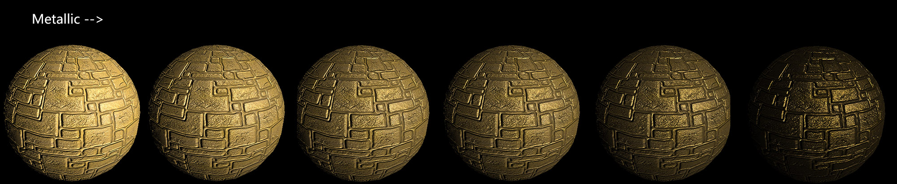
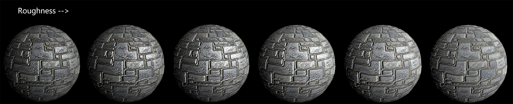

实现基于物理的渲染
2016-6-5
这里实现了一版基于物理的渲染着色，主要是根据前段时间翻译的这篇文章（Part1和Part2）。下面我们就根据其中的分析以及推导出的公式自己写一个基于物理的着色。PBR 只是一种思考问题的方法（思想），并不局限于某个公式或者某种方法。下面所阿斯顿发斯蒂芬阿斯蒂芬用到的方程其实都是可以用其它更好的方程替换的，也许其它的方程和这里所提到的会完全不一样，但是都是 PBR 的思想。
所有的光照计算都是在切线空间中进行的，所以我们先要把要用到的值都转换到切线空间。最关键的值是光入射向量的反向量和反射方向（视线向量）以及法线向量这几个值。首先我们就先准备好这几个值，并将其转换到切线空间，为后续的 PBR 计算做准备。
struct appdata
{
float4 vertex : POSITION;
half2 texcoord : TEXCOORD0;
float3 normal : NORMAL;
float4 tangent : TANGENT;
};
struct v2f
{
float4 pos : SV_POSITION;
half2 uv : TEXCOORD0;
// 法线
float4 normal : TEXCOORD1;
// 切线
float4 tangent : TEXCOORD2;
// 副切线
float4 binormal : TEXCOORD3;
// 模型空间中的光源位置
float3 objLightPos : TEXCOORD4;
// 模型空间中的观察位置
float3 objViewPos : TEXCOORD5;
};
v2f vert(appdata i)
{
v2f o;
o.pos = mul(UNITY_MATRIX_MVP, i.vertex);
o.uv = TRANSFORM_TEX(i.texcoord, _MainTex);
float3 binormal = cross(i.normal, i.tangent.xyz) * i.tangent.w;
// 准备好 法线 切线 副切线
// w 分量存储模型空间中的顶点位置
o.normal = float4(i.normal, i.vertex.x);
o.tangent = float4(i.tangent.xyz, i.vertex.y);
o.binormal = float4(binormal, i.vertex.z);
// 模型空间中的光源位置
o.objLightPos = mul((float3x3)_World2Object, _worldLightPos).xyz;
// 模型空间中的观察位置
o.objViewPos = mul((float3x3)_World2Object, _WorldSpaceCameraPos).xyz;
return o;
}
half4 frag(v2f i) : SV_Target
{
// 切线空间矩阵
float3x3 obj2tan = float3x3(normalize(i.tangent.xyz), normalize(i.binormal.xyz), normalize(i.normal.xyz));
// 模型空间顶点位置
float3 objPos = float3(i.normal.w, i.tangent.w, i.binormal.w);
// 模型空间中光源位置
float3 objLightPos = i.objLightPos;
// 模型空间中光向量
float3 objLightDir = objLightPos - objPos;
// 模型空间中观察位置
float3 objViewPos = i.objViewPos;
// 模型空间中观察向量
float3 objViewDir = objViewPos - objPos;
// 切线空间光向量
float3 tanLightDir = normalize(mul(obj2tan, objLightDir));
// 切线空间观察向量
float3 tanViewDir = normalize(mul(obj2tan, objViewDir));
// 切线空间法线向量
float3 normaltex = tex2D(_BumpMap, i.uv) * 2 - 1;
half4 c = half4(1, 1, 1, 1);
// 在这里进行光照计算
return c;
}
上面是一个基础的框架，光照计算部分被留空了，下面就对照着公式实现光照计算。
\[ L_o(v) = \pi f(l_c,v) \otimes c_{light} \underline{ (n \cdot l_c) } \]
这是我们所使用的光照方程，推导的方式及过程可以看这篇资料中的内容。
$$$ L_o(v) $$$ 是要求得的值，表示反射到眼中的光。
$$$ f(l_c,v) $$$ 是 BRDF 方程，两个参数分别是入射光的反向向量和反射光向量。
$$$ c_{light} $$$ 是入射光的辐照度。
$$$ \underline{ (n \cdot l_c) } $$$ 是入射光的 Lambert 效应，如果入射光的反向向量和表面法线平行，那么这个值等于 1。下划线表示最小值为 0。
$$$ \pi $$$ 来自于漫反射项。
$$$ \otimes $$$ 表示各分量相乘。由于是使用 RGB 值来表示的，所以两个 RGB 值各通道值相乘。
c.rgb = PI * BRDF(tanViewDir, tanLightDir, normaltex) * _lightColor.rgb * _lightIntensity * max(dot (normaltex, tanLightDir), 0);
这里的每一项都很清晰，和上面的公式一一对应。主要需要解释的是 BRDF 这个函数。首先我们要给出的是这个函数在数学上的表达，然后再看其对应的代码。
\[ BRDF = (1 - k) \cdot Diffuse + k \cdot Specular \]
这里的 Diffuse 表示漫反射部分，Specular 表示镜面反射部分，这两个都很好理解，需要解释的是 k 这个值。入射光最终会以漫反射或者镜面反射的形式被反射出去，那么有百分之多少最终成为漫反射，又有百分之多少最终成为了镜面反射呢。我们根据物理知识可以得知，越是金属的物质就有越多的镜面反射，越是绝缘体的物质就有越多的漫反射，就是用 k 这个值来表示百分比。PBR 材质中叫做金属度（Metallic）。现实情况中的物质要么是金属要么是绝缘体，金属会吸收掉几乎所有的散射光，一般不会有两者之间的情况，所以在 PBR 材质中这个值通常设定为 0 或 1（没有中间值），当然我们做的是基于物理的渲染，而不是完全遵循物理定律的渲染，所以也是可以设置为 0 到 1 之间的某个中间值的。这样方程就变成了：
\[ BRDF = (1 - Metallic) \cdot Diffuse + Metallic \cdot Specular \]
然后说一下 Diffuse 项，这一项非常简单，根据公式：
\[ f_{lambert \ diffuse} = { c_{diff} \over \pi } \]
$$$ c_{diff} $$$ 就是才是本身的固有色，也就是不受任何光照时的颜色。
Specular 项比较复杂，首先给出总的公式：
\[ f_{spec} = { F(l,h)G(l,v,h)D(h) \over 4(n \cdot l)(n \cdot v) } \]
F 是 Fresnel 项，G 是微表面遮挡项，D 是微表面法线分布项，分母上表示的是一个矫正因子（一般会被 G 中某一部分抵消掉）。
下面是 Fresnel 项：
\[ Fresnel_{Schlick} = c_{spec} + (1 - c_{spec})(1 - (l \cdot h))^5 \]
$$$ c_{spec} $$$ 表示入射角为 $$$ 0^o $$$ 时的值，这是一个基础值，公式在此基础值只上模拟出近似 Fresnel 的曲线。至于这个值该如何选取可以参见参考资料中的一张关于 Fresnel 项的表格，其中详细记录了每一种材质对应的最理想的 $$$ c_{spec} $$$ 值。一般在实现的时候会使用以下近似的方式来表示 $$$ c_{spec} $$$，把他和 Metallic 值关联起来：
\[ c_{spec} = lerp(dielectricSpec, albedo, Metallic) \]
dielectricSpec 是绝缘体的 $$$ c_{spec} $$$ 值，albedo 是物体的固有色。
微表面遮挡项（G）和微表面法线分布项（D）其实也是两个方程，当然这样的方程有很多不同的算法，不同的方程算法对最终表现出来的效果会有差异。目前不同的 PBR 实现其实也就是在不断调整这几个方程，使效果达到更好。所有这些方程都关系到 PBR 的一个核心的思想，微表面，相关的一个参数是粗糙度（Roughness）,也有叫做平滑度的（Glossness），表达的意思都一样（一对反义词）。
最后是 PBR 光照的实现代码：
// 在这里进行光照计算
fixed4 albedo = tex2D(_MainTex, i.uv);
half3 diffColor = albedo * (1-_Metallic);
half3 diffTerm = DiffuseTerm(diffColor);
half3 specColor = lerp(_Specular.rgb, albedo, _Metallic.x);
half3 specTerm = SpecularTerm(specColor, _Roughness, tanViewDir, normaltex, tanLightDir);
c.rgb = PI * BRDF(tanViewDir, tanLightDir, normaltex) * _lightColor.rgb * _lightIntensity * max(dot (normaltex, tanLightDir), 0);
half3 DiffuseTerm(half3 diffColor)
{
return diffColor / Pi;
}
half3 SpecularTerm(half3 specColor, float roughness, half3 V, half3 N, half3 L)
{
half3 H = normalize(V + L);
half NdotL = saturate(dot(N, L));
half NdotV = saturate(dot(N, V));
half NdotH = saturate(dot(N, H));
half LdotH = saturate(dot(L, H));
half D = Distribution_GGX(roughness, NdotH);
half G = GeometricVisibility_Schlick(roughness, NdotV, NdotL);
half3 F = Fresnel_Schlick(specColor, LdotH);
return D * G * F / 4;
}
float Distribution_GGX(float roughness, float NdotH)
{
float m = roughness * roughness;
float m2 = m * m;
float d = (NdotH * m2 - NdotH) * NdotH + 1;
return m2 / (d*d);
}
float GeometricVisibility_Schlick(float roughness, float NdotV, float NdotL)
{
float k = roughness * roughness * 0.5;
float G_SchlickV = NdotV * (1 - k) + k;
float G_SchlickL = NdotL * (1 - k) + k;
return 0.25 / (G_SchlickV * G_SchlickL);
}
float3 Fresnel_Schlick(float3 specColor, float LdotH)
{
return specColor + (1 - specColor) * pow((1 - LdotH), 5);
}
下面是渲染的效果图。第一张是金属度（Metallic）逐渐增大，第二张是粗糙度（Roughness）逐渐增大。


最基础的 PBR 材质实现就是这些了，对于环境光以及多光源的情况还没有涉及到。多光源一般就是分别计算每个光源，最后将结果叠加。环境光可以是 CubMap，也可以是 GI，这些都可以上效果更加逼真。像点光源这种会产生衰减效果也没有考虑到。